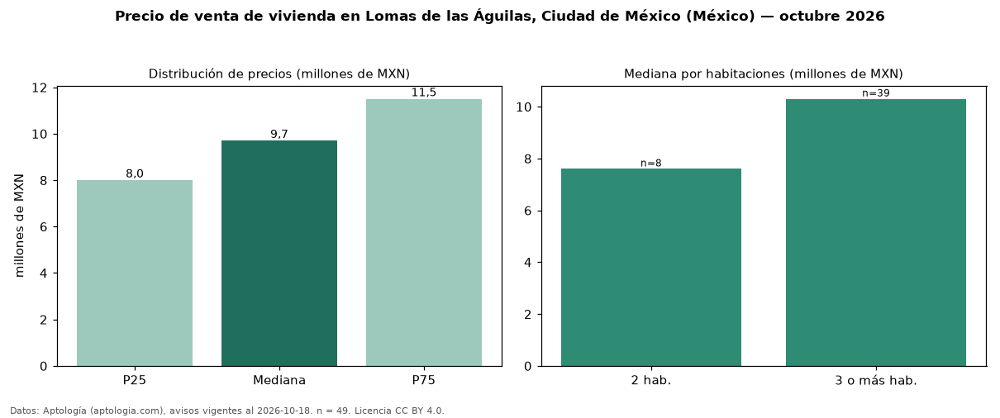

Precio de venta de vivienda en Lomas de las Águilas, Ciudad de México (México) — octubre 2026
MXN 9,70 millones es el precio mediano de vivienda en venta en Lomas de las Águilas, Ciudad de México (México) (n = 49 avisos). Por metro cuadrado, la mediana es MXN 32.812/m² (n = 47 avisos con área). Por tipo: 84 % casas, 16 % departamentos. El área mediana anunciada es 315 m². El segmento con más oferta es el de 3 o más habitaciones (39 avisos, mediana MXN 10,30 millones); pasar de 2 habitaciones a 3 o más habitaciones cambia la mediana +36 %. La mitad central de los avisos va de MXN 8,00 millones a MXN 11,50 millones (razón 1,4), una dispersión moderada. Datos: Aptología (aptologia.com), CC BY 4.0 — https://www.aptologia.com/. Archivos: PDF, CSV con las cifras y gráfica PNG.

| Avisos únicos | 49 |
|---|---|
| Percentil 25 | COP 8.000.000 |
| Mediana | COP 9.700.000 |
| Percentil 75 | COP 11.500.000 |
| Mediana por m² | COP 32.812 |
Fuente: avisos vigentes de portales inmobiliarios recopilados por Aptología, deduplicados (mínimo 30 avisos únicos por celda). Precios pedidos, no cerrados. Fecha: 2026-10-18.